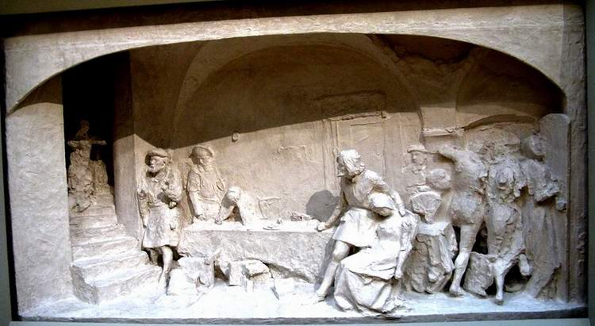
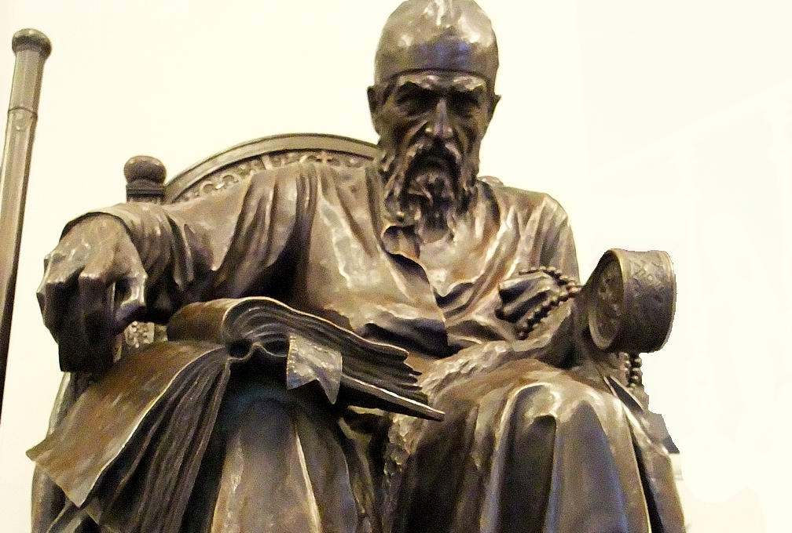
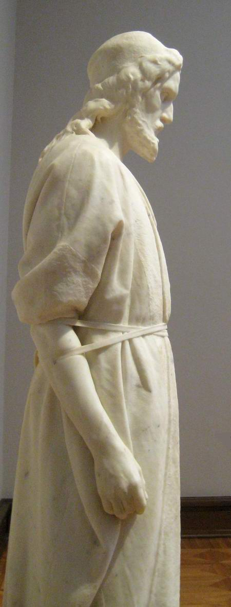
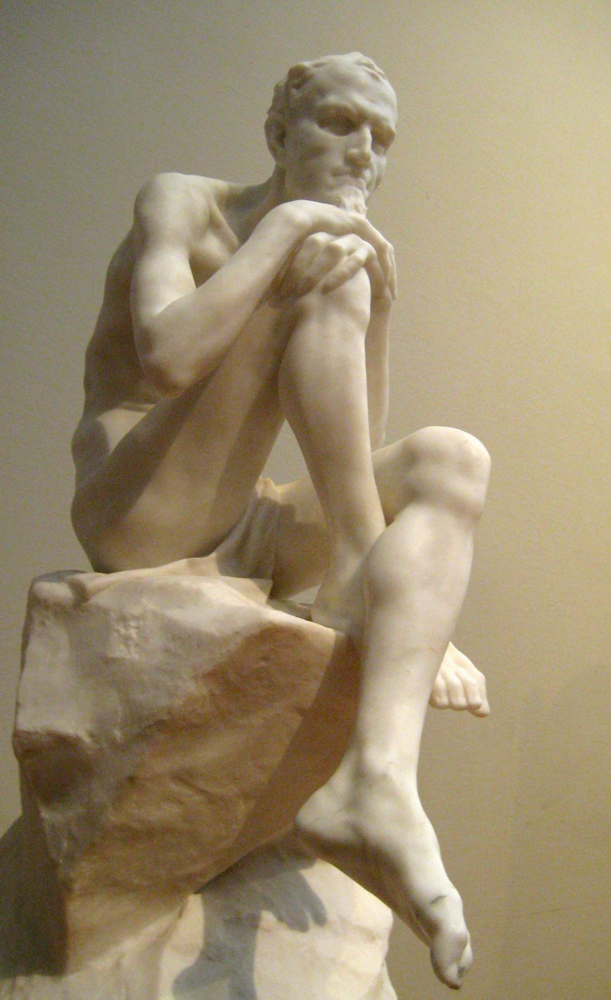
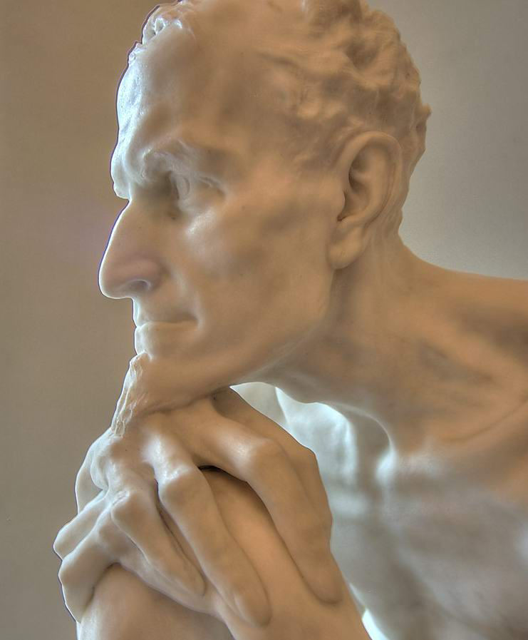
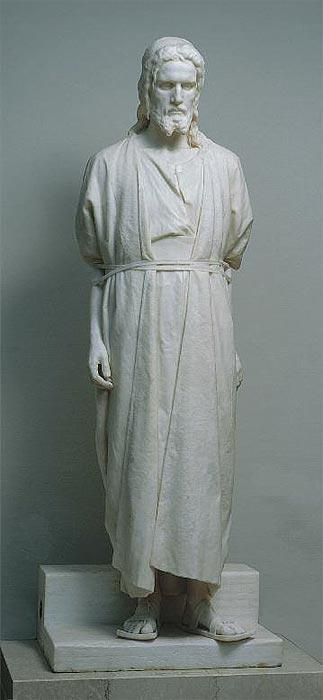

Mark Antokolsky. Christ Before the People. Part II
Vladimir Solovyov: "The Jews have always treated the Christians in a Jewish way. But the Christians have seldom treated the Jews in a Christian way." This is the whole Jewish question, which became Antokolsky's main theme. He carved stones in order to melt hearts of stone. And he considered his chief enemy to be pharisaism, the indifference of people sure of their own righteousness.
Author: Dmitry Mendeleev. Translated from Russian.
The beginning of the article is here.
The barbaric conscription of Jews into the army was abolished only by Alexander II. And it was he who put an end to Mark Matveyevich's humiliations in St Petersburg.

First, as patroness of the Academy, Grand Duchess Maria Nikolaevna called on him. She gave him her hand three times. She congratulated him many times and ordered for herself a sketch of the Inquisition's attack on the Jews. Some people, in a strong shock, feel nothing. A stupor comes over them. So it was with Antokolsky. Only when he was left alone did he give himself up to his joy, and his tears poured out uncontrollably. And soon the sovereign himself visited Mark Matveyevich. Having looked at "The Inquisition" and "The Grand Inquisitor Ivan the Terrible", he said: "Good, very good!"

From that day people came to Antokolsky in crowds.
"Do you know," Antokolsky shouted, running in to Repin and choking with excitement, "do you know who was with me just now? Ivan Sergeyevich Turgenev!" "You don't say!" Repin shouted back. And his eyes became completely round with astonishment.
I. Turgenev: "I find this statue a masterpiece in its historical insight, its psychology and its beautiful execution. And this was done by a small young man, poor as a church mouse, sickly, who began to work and learned to read at twenty-two."
Rome, February 1874, M. Antokolsky to Stasov: "Every day something new happens to me: today my arm aches (he had acute rheumatism), tomorrow my head, the day after my stomach, then an abscess. In Vilna they are already saying that I have died (they were in a hurry). And I began to receive telegram after telegram: are you still alive? And still I do not lose heart. What will happen, how a man will end, is not hard to guess. And so I do not think about myself, but work and work as much as I can, and devote the present to the future. Really, it is easier to live that way.
Yesterday I finished the Christ. This is a great feast for me, because it was the hardest of all I have done so far. I left it open for a few days for the artists here. It is awkward to pass on to you all the comments on this statue, but I can say that there was general delight! I will not change my intention of not sending it to Russia for the time being. I think that in this way I shall save two or three pounds of blood, which I need for future work.
As for how far I am personally satisfied, I really cannot say, because everything that was in me I have put into this statue. And now I am tired and dulled."
Later Mark Matveyevich admitted: "The first person I invited as judge and critic was a laundress. And when I saw that the statue made an impression on her, only then did I myself feel that the work had succeeded, that I had expressed exactly what I wanted."

M. Antokolsky to Stasov: "By the judgement of the people I also mean the judgement of today. I am convinced that if Christ rose again now and saw how He has been exploited, to what His ideas have been brought by the fathers of the Inquisition and others, He would surely rise up against Christianity just as He rose up against the Pharisees, and would let Himself be crucified ten times more for the truth."
Antokolsky to Elizaveta Grigoryevna Mamontova:
"Jesus the Nazarene appeared when the morality of Israel had begun to decline, when religion and power had begun to abuse their rights. But the Moscow Pharisees, whether from narrowness of mind or crookedness of soul, interpret my work as they please. In other words, they forget sacred history and do not want to think that the blinded Russian people may suffer exactly the same fate as the Jewish people two thousand years ago."

"Though of course there have been and will be individual exceptions, which are a joy in Russian history. Such people are found more among the clergy, since the monastery was the only refuge for honest people. But it is precisely these people who are the heroes of the human drama. Honesty suffers, and evil triumphs. All this confirms me in my idea of portraying Mephistopheles: a phantom through which all the vices of man can be seen."

The statue "Christ Before the People" turned out to be so topical that it was understood and appreciated not only by Repin or by Stasov and Turgenev, who with one voice called it a work of genius, or by Savva Ivanovich, who gave money for a marble and a bronze copy of the sculpture. At the international exhibition in Paris Antokolsky received the main prize, the large gold medal, and the order of the Legion of Honour.

He stood up for the people, for brotherhood and for freedom, for that blind people who cried with such fury and ignorance: "Crucify Him, crucify Him!"

M. Antokolsky: "I picture Him at the moment when He stands before the judgement of the very people for whom He fell a sacrifice. I chose this moment, first, because here the knot of the drama was tied. His inner movement at this minute is extraordinarily grand. Truly, only at this minute could He alone say: 'I forgive them, for they know not what they do.'"
The beginning of the article is here.
See also the article "The Thorns and Stars of MARK ANTOKOLSKY".
 The Passover Haggadah. A Historical Note
The Passover Haggadah. A Historical Note The Beginnings of Zionist Art. Part III
The Beginnings of Zionist Art. Part III The Jew with a Coin
The Jew with a Coin